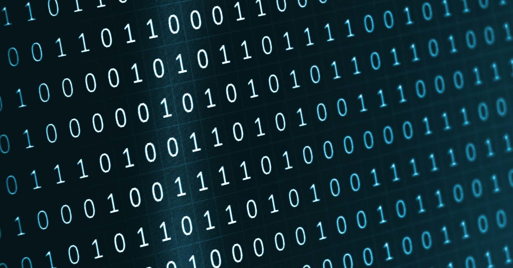
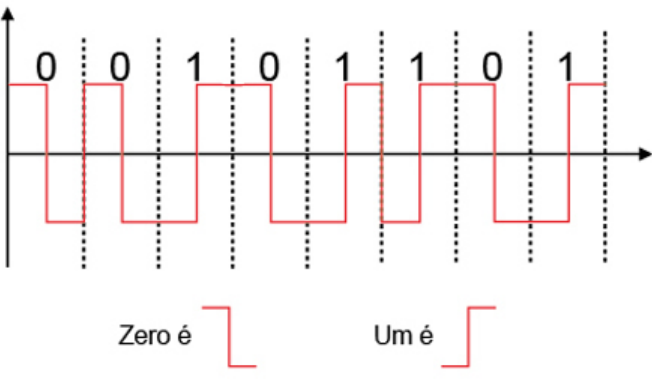
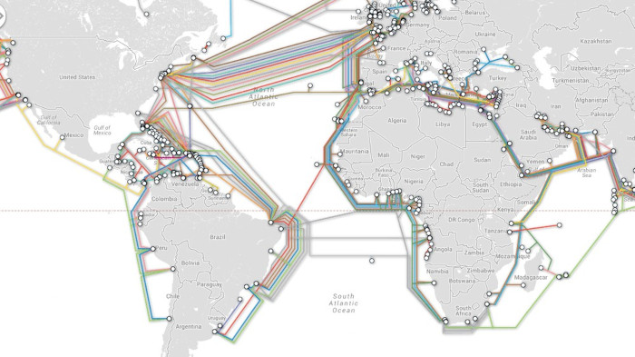
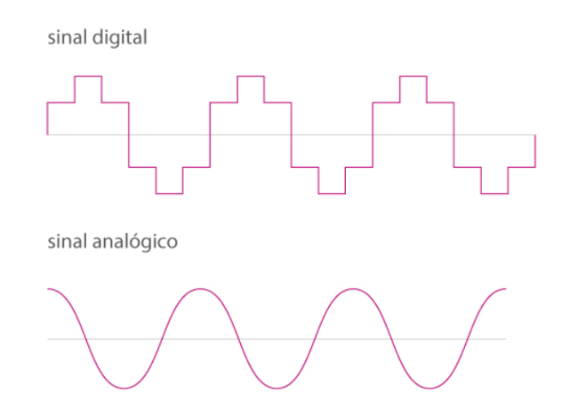
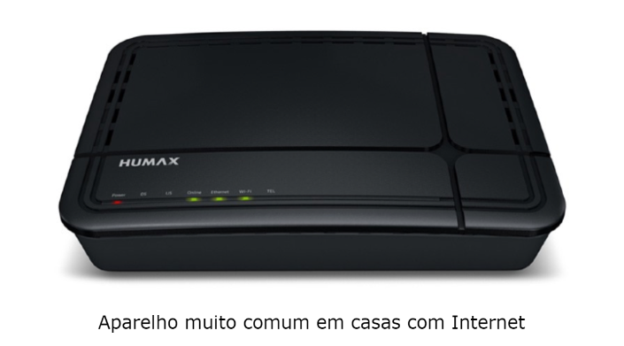
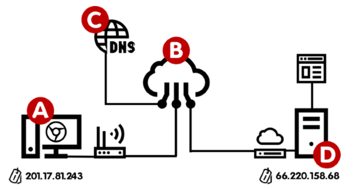

Você sabe que um computador é um equipamento eletrônico capaz de etender apenas um tipo de sinal, não sabe?
Tem gente que acha que um computador é um dispositivo super inteligente e cheio de capacidades de decidir nosso destino, mas na verdade ele é apenas uma máquina capaz de analisar sinais e fazer contas simples de uma maneira super rápida!
Eu sinto te informar, mas resumindo bastante aqui, o computador só é capaz de compreender duas coisas: 0 e 1.
Mas é claro que o que circula dentro do seu computador não são pequenos números, são ondas (sinais). No caso de equipamentos eletrônicos processados, as ondas se parecem com as representadas a seguir.
Como vimos na aula anterior, a Internet é uma rede gigantesca que interliga várias outras redes ao redor do mundo. E precisamos ter meios físicos para levar esses sinais de um lado para o outro.
Veja a imagem abaixo uma distribuição de redes de computadores pelo mundo.
E se você está confuso(a) com esse conceito, saiba que a maioria das transmissões entre continentes não é realizada pelos Satélites, como a maioria das pessoas costuma pensar. Os satélites possuem uma limitação de tráfego e sofrem muito com interferências, e é por isso que os cabos de fibra ótica devem ser passados pelos oceanos. Um trabalho incalculável, mas necessário.
Mas não dá para esses cabos submarinos saírem pela praia e seguirem caminho até a sua casa, e por isso precisam se interligar a outros sistemas de comunicação. Alguns dos sistemas ultilizados sempre foram a telefonia tradicional, os sistemas de TV a cabo, os sinais via satélites e até as simples redes de Radiofrequência.
O problema é que os sistemas diferentes transmitem sinais em formatos diferentes como se pode ver na imagem acima. Isso dificultaria a comunicação entre pontos, se não fosse um processo de "conversão", mais conhecido como MODULAÇÃO.
De uma maneira bem resumida, modular é conseguir ler uma onda no formato A compatível com um tipo de sistema de comunicação e convertê-la para um formato B, compatível com outro tipo de sistema.
E é exatamente para isso que servem aqueles aparelhos que você instala em sua casa para começar a receber Internet doméstica
Uma das funções desse aparelho é MODULAR os sinais que saem e DEMODULAR os sinais que chegam. E é por isso que chamamos esse aparelho de MODEM.
Já que falamos de Roteadores
As rotas são outro assunto muito importante para o funcionamento da Internet. Pense na rede como se fosse um mapa com várias ruas, como você morando em um bairro distante do centro da cidade poderia chegar até o centro? Provavelmente vai existir várias rotas, quem vai decidir o melhor caminho é você ou talves seu GPS.
Na Internet também é assim. Para enviar um sinal de um dispositivo A para um dispositivo B, podemos ter várias rotas. Quem vai definir a melhor rota são os ROTEADORES que compõem a rede. Os pacotes de dados podem chegar em seu computador por diversas rotas diferentes, tudo vai depender do tráfego no momento da transmissão.
Cliente e Servidor
Imagine um ponto A que é você na escola pedindo uma pizza. o ponto B é a pizzaria, que vai te fornecer o pedido que vai matar sua fome. Quano o pedido for confirmado, o motoboy que vai fazer a entrega é o pacote. Ele vai levar seu pedido até você por uma determinada rota escolhida por ele ou pelo GPS dele.
Nessa situação que descrevi acima, você no ponto A é o CLIENTE. A pizzaria no ponto B é o SERVIDOR. O motoboy é o PACOTE e sua pizza é o DADO. A internet também vai funcionar dessa maneira.
Um servidor pode estar no seu bairro, na sua cidade, no seu país ou até mesmo do outro lado do mundo. Os pacotes podem girar o mundo todo em poucos segundos e o resultado será exibido na tela do seu celular/computador como se fosse magia, mas é pura TECNOLOGIA!
Na Internet existem vários servidores:
- Servidores de site(também chamamo de WebHost)
- Servidor de streaming
- Servidor de arquivos
- Servidor de e-mail
- E muito mais...
Mas como será que o mecanismo da Internet consegue descobrir o local exato de um site? Como ele descobre em que servidor ele está? E como ele consegue encontrar a posição exata do servidor no Globo? Aí entramos no próximo assunto.
Identificando os nós
Como vimos anteriomente, a internet funciona baseada em um conjunto de protocolos chamados TCP/IP. Um protocolo garante que todas as comunicações seguirão um mesmo padrão, permitindo que dispositivos que são diferentes, com tecnologias completamentes distintas, possam se trocar mensagens.
Uma das funções do TCP/IP, mais especificamente do IP, é identificar os nós. Mas o que seria esse nó? A resposta é simples: um nó é cada ponto que está conectado a rede. Quando você "se conecta" à Internet, recebe uma identificação única. Essa identificação é um ENDEREÇO IP.
Os IPs mais antigos (IPv4) usam 4 octetos, que são conjuntos de 8 bits separados por pontos, totalizando 32 bits por identificador.
Ex: 123.45.67.89 = 01111011.00101101.01000011.01011001
Os IPs mais modernos (IPv6), usam 128 bits ao todo (o que é 4x mais bits que o IPv4).
Ex: 2001:0db8:85a3:08d3:1319:8a2e:0370:7344
Acessando um servidor
Agora que você já sabe como os pontos são identificados, vamos criar um simples cenário aqui. Analise a imagem abaixo e veja que você estaria no ponto A, tentando acessar o site que está guardado no servidor que é o ponto D.
Você também deve ter notado que o ponto A tem um IP (201.17.81.243) e o ponto D também tem o seu (66.220.158.68). Agora Imagine que você deva ter que decorar o IP do seu site favorito. Isso dificultaria todo processo, não é?
E é para isso que existe o DOMAIN NAME SYSTEM, ou sistema de nome de domínio. Eles são como grandes "listas telefonicas", criando uma ligação entre o nome do site e o número de IP relacionado a ele.
Importante deixar bem claro: os números de IP mudam constatemente! Sempre que você desconecta o gateway da sua operadora (aquele aparelho que tem instalado na sua casa), o seu número de IP vai mudar.